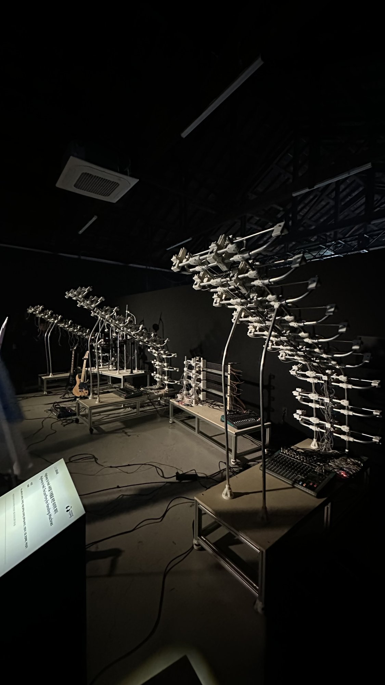
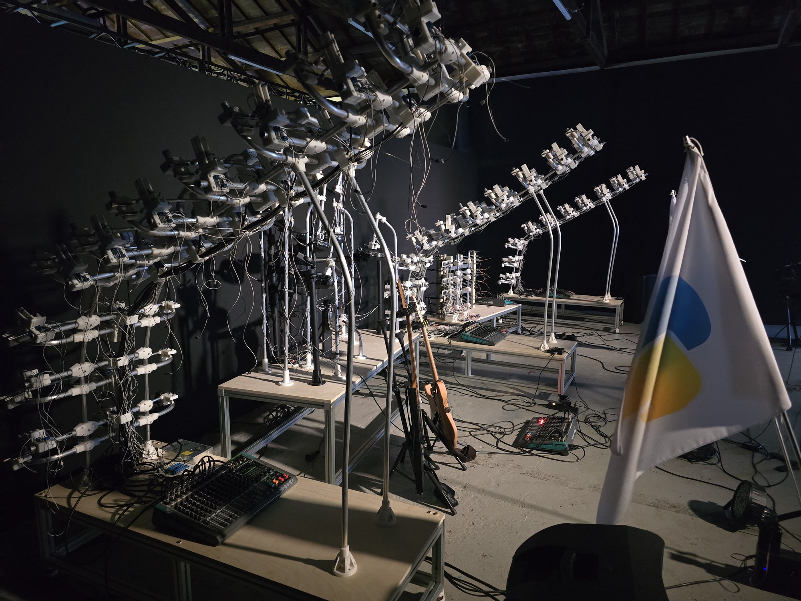
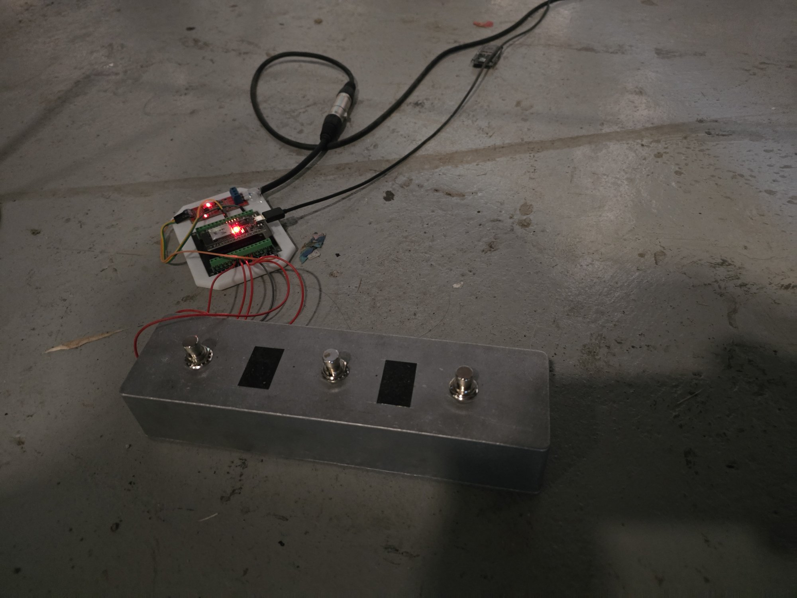
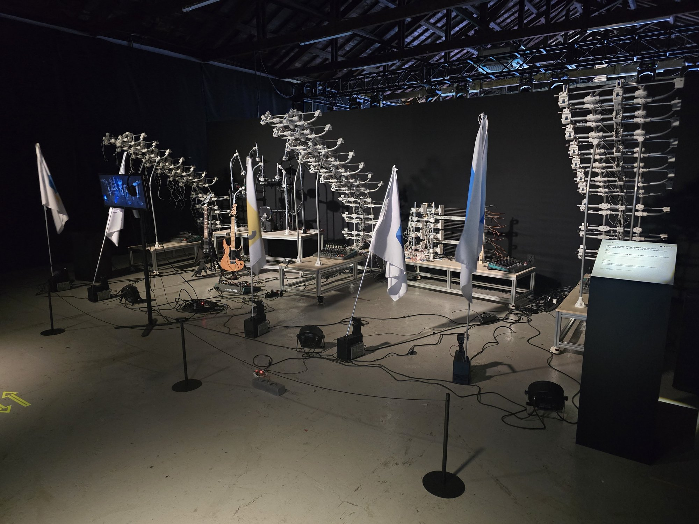
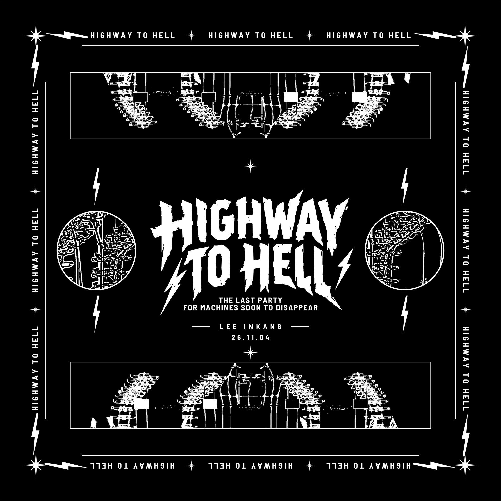
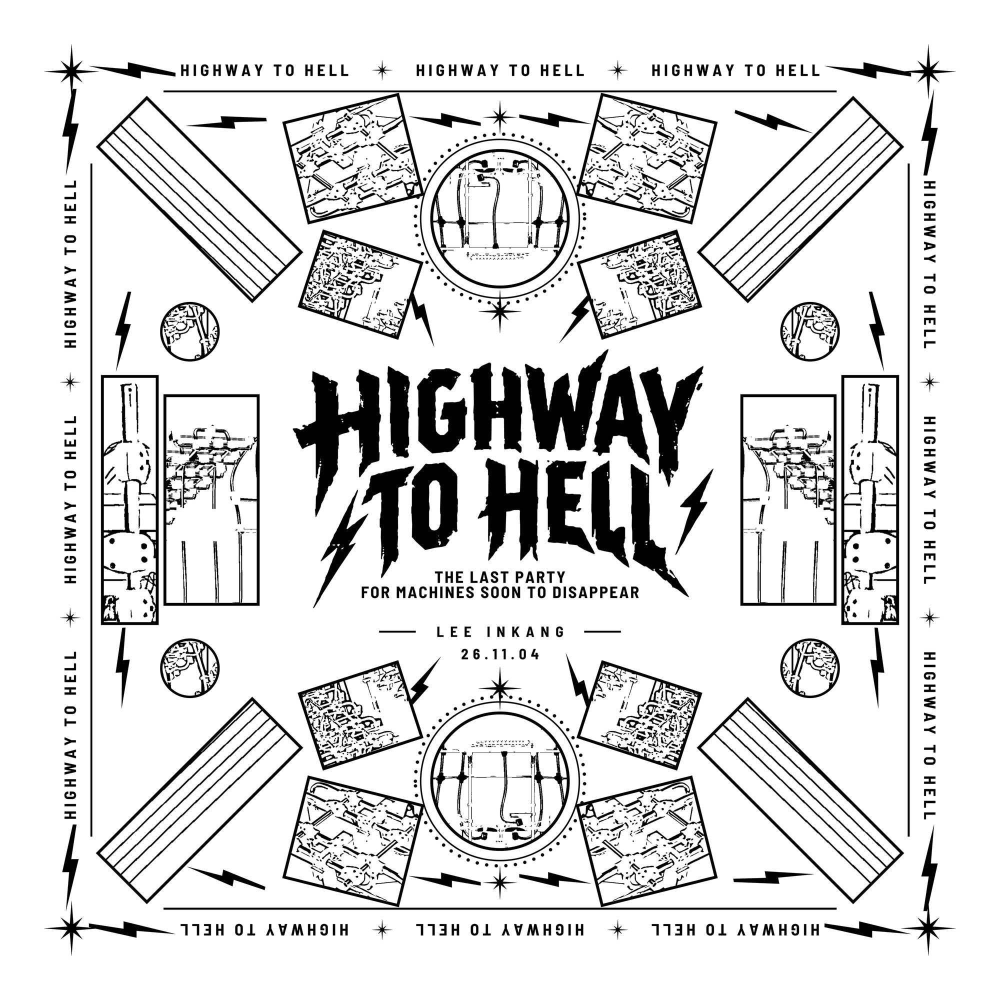
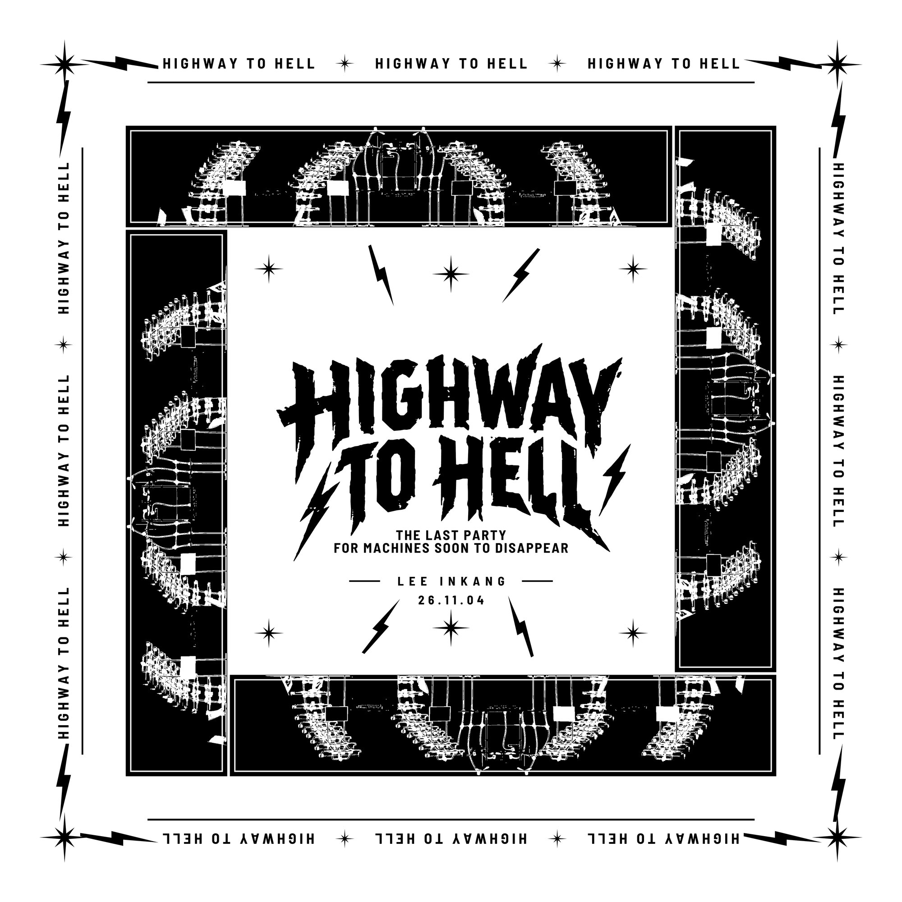

Highway to Hell: 사라질 기계들을 위한 마지막 파티
Highway to Hell: A Last Party for the Machines Soon to Disappear


본 프로젝트는 AI의 도입으로 인해 점차 사용목적을 잃어가는 다수의 프로그램어와 기계들에게 작별을 고하는 군무를 구성하고, 그들이 마지막으로 작동하는 상태를 ‘공연 및 파티 형식으로 제안한다. AI 이전의 기술 조건 속에서 설계되어 학습과 판단 능력 없이 반복을 수행하는 기계와 인간과 기계 사이의 번역의 역할을 하는 프로그래밍어들에 집중한다. 프로젝트는 기술 자체의 생애와 퇴장에 초점을 두되, 그 변화 속에서 영향을 받을 우리의 삶의 방식을 간접적으로 내포한다. 공연과 파티의 형식은 작업을 위해 수년간 프로그래밍과 하드웨어 제어를 학습해온 작가 자신의 지난 시간과 작업실에서 중단된 장치실험에 대한 기록이자 회고이다. 남겨진 플라스틱 파편과 기계들에게 본래의 기능으로부터 유리된 새로운 역할을 부여하고, 소음을 발생시키는 현장을 통해, 사라지는 기술과의 작별을 해학적으로 표현한다.
This project composes a group dance that bids farewell to the many programming languages and machines gradually losing their purpose with the arrival of AI, and proposes their final state of operation in the form of a performance and a party. It focuses on machines designed under pre-AI technological conditions, which repeat without the ability to learn or judge, and on the programming languages that act as translators between humans and machines. While centered on the life and exit of technology itself, the project indirectly implies the ways of living that will be affected by this change. The performance-and-party format is a record and reflection of the artist's own years spent learning programming and hardware control, and of the device experiments halted in the studio. By giving the leftover plastic fragments and machines new roles detached from their original functions, and through a site filled with noise, it expresses a humorous farewell to vanishing technologies.


AI 기술은 판단, 생성, 선택의 과정을 자동화함으로써 기존의 기술 구조를 빠르게 재편하고 있다. 이 과정에서 파이썬, 자바, C++등의 인간과 기계 사이의 중간언어인 프로그래밍어들, AI가 탑재되지 않은 반복 동작 기계, 느린 반응과 오차를 전제로 설계된 전자적 장치들은 더 이상 기술 발전의 중심에 놓이지 않게 된다. 이러한 기술들은 아직 작동은 가능하지만 더 이상 호출되지 않는 상태로 남아있게 된다. 본 프로젝트는 이러한 중간 상태, 즉 폐기되기 전의 기술적 잔여물에 주목한다. 작업실에 축적된 미완의 부품, 실패한 장치, 중단된 실험들 또한 이러한 조건 속에서 발생한 결과물이다. 이들은 완성되지 않아서가 아니라, 변화하는 기술 환경 속에서 더 이상 필요하지 않게 되었다는 이유로 남겨진다.
AI technology is rapidly reshaping existing technological structures by automating the processes of judgment, generation, and selection. In this process, programming languages such as Python, Java, and C++ — the intermediary languages between humans and machines — along with repetitive machines without AI, and electronic devices designed on the assumption of slow response and error, are no longer at the center of technological development. These technologies remain operable but are no longer called upon. This project focuses on this in-between state — the technological remnants that exist just before disposal. The unfinished parts, failed devices, and interrupted experiments accumulated in the studio are also outcomes born of this same condition. They are left behind not because they are incomplete, but because they are no longer needed amid a changing technological environment.
본 프로젝트는 시대에서 밀려나는 프로그래밍언어와 하드웨어 기술을 불러내는 생존신고이자, 그 퇴장을 기리는 제의적 퍼포먼스 및 고별파티이다. 여기서 퇴장은 기술적 흐름 속에서 더 이상 선택되지 않는 상태이며, 기계들은 이 소외된 상태에서 격렬한 연주를 통해 자신들의 생존신고를 수행한다. 특히 이러한 퇴장은 앞으로 AI가 인간의 언어를 경유하지 않는 연산 구조로 이동함에 따라, 자바나 파이썬처럼 인간과 기계를 잇던 매개 언어들이 더 이상 읽히지 않는 침묵의 언어/호출되지 않는 언어로 남겨지는 시대를 반영한다.
This project is both a declaration of survival that summons programming languages and hardware technologies being pushed out by the times, and a ritual performance and farewell party honoring their exit. Here, "exit" means a state of no longer being chosen within the technological flow, and the machines carry out their own declaration of survival through fierce performance in this marginalized state. In particular, this exit reflects an era in which, as AI moves toward computational structures that bypass human language, mediating languages like Java and Python — which once connected humans and machines — are left behind as silent, uncalled languages.
기타 및 드럼 연주 기계는 AI기반 시스템이 아닌 작가의 ‘손코딩‘ 스크립트에 의존해 구동된다. AI에 의해 생략될 ‘번역의 과정’을 통해 프로그래밍 코드 한 줄이 물리적 타격음으로 번역되는 과정을 작동 퍼포먼스로 나타낸다. 학습하거나 판단하지 않는 이 기계들의 반복적인 움직임은 AI생성 시스템의 유연함과 대비되며, 환경에 따라 흔들리고 마모되는 기계 본연의 불완전한 작동 방식을 드러낸다. 이는 작업을 위해 수년간 프로그래밍과 하드웨어 제어를 학습해온 작가 자신의 지난 시간과 작업실에 남은 미완의 작업 파편들에 대한 기록이자 회고이기도 하다.
The guitar and drum performance machines run not on AI-based systems but on the artist's own hand-coded scripts. Through this "process of translation" — one AI would otherwise skip — a line of code becomes a physical striking sound. The repetitive movement of these machines, which neither learn nor judge, contrasts with the flexibility of AI-generative systems, revealing the imperfect, unstable way machines operate as they wobble and wear with their environment. This is also a record and reflection of the artist's own years spent learning programming and hardware control, and of the unfinished fragments of work left in the studio.
퍼포먼스 및 파티의 형식은 AI의 출현으로 인한 급격한 사회구조의 변화와 인간, 그리고 예술의 관계를 절망하기보다는 유쾌하고 즐겁게 받아들이겠다는 선언이다. 프로젝트의 제목인 Highway to Hell은 호주의 밴드 AC/DC의 동명 곡에서 차용된 것으로, 반복되는 삶의 리듬과 그 속에서 누적되는 소모의 상태를 노래한다. 본 작업은 이 곡의 내용을 빌려, 사라져가는 기술들과 그 잔여물들이 마지막으로 소음을 내며 움직이는 장면을 하나의 축제처럼 펼쳐보인다.
The performance-and-party format is a declaration to meet the rapid social changes from AI, and the relationship between humans and art, with joy rather than despair. The title, Highway to Hell, is borrowed from the AC/DC song of the same name, about life's repetitive rhythm and accumulating wear. Borrowing from this song, the work unfolds as a festival — vanishing technologies and their remnants moving and making noise for the last time.
지금까지 기계를 다루는 작업을 진행할 때마다, 설계오차로 인해 사용되지 못한 부속들과 구동 과정에서 파손된 파편들이 반복적으로 발생해 왔다. 의도와는 다르게 남겨진 이 잔여물들은 기능을 완수하지 못한 채 작업실에 축적되었고, 이들에게 새로운 기능을 부여하고자 시도한다. 효율을 기준으로 판단할 때 가장 먼저 배제되는 이러한 파편들은 AI의 확산 속에서 주변부로 밀려나는 기계들의 상태와 겹쳐진다. 완성되지 않았다는 이유로, 혹은 더 나은 대안이 존재한다는 이유로 선택되지 않는 것들. 이 프로젝트는 그러한 잔여 상태를 실패로 정리하지 않고, 또 하나의 작동 조건으로 유지한다. 기계를 직접 다루고, 코딩으로 구동 로직을 작성하며, 3D 모델링과 제작을 반복해온 작가 자신 또한 이러한 흐름에서 자유롭지 않다. 자동화와 생성의 속도가 가속되는 환경 속에서, 이와 같은 방식의 작업 역시 점차 비효율적인 선택지로 밀려나고 있다. 본 작업은 기계와 작가 자신의 시간을 동일시하며 그 둘에게 처한 공동의 상황과 위치를 함께 드러낸다.
In every project involving machines so far, unused parts caused by design errors and fragments broken during operation have repeatedly occurred. These unintended remnants, left without fulfilling their function, accumulated in the studio, and this project attempts to give them new functions. Judged by efficiency, these fragments — the first excluded — overlap with machines pushed to the margins by AI: things not chosen for being unfinished, or because better alternatives exist. This project keeps that residual state as another operating condition, not a failure. The artist, who has directly handled machines, coded driving logic, and repeated 3D modeling and fabrication, is not exempt from this flow. As automation and generation accelerate, this kind of work too is pushed aside as inefficient. This work equates the machines' time with the artist's own, revealing their shared situation.
이 프로젝트는 ‘쓸모 있음’과 ‘쓸모 없음’이라는 이분법 너머에 무엇이 남는지를 묻는다. 더 이상 사용되지 않지만 여전히 ‘저장’의 상징으로 기능하는 디스켓 아이콘처럼, 사라진 기술이 완전히 소멸하지 않고 다른 형식으로 잔존하는 가능성에 주목한다. 기계들은 음악의 박자에 맞추어 사라질 아이콘 깃발을 흔들고, 음악을 연주한다. 작가는 이 기계들의 움직임을 지휘하며 작가자신과 기계들의 존재를 드러내는 행위를 이어간다.
This project asks what remains beyond the binary of 'useful' and 'useless.' Like the diskette icon — no longer used, yet still the symbol for 'save' — it focuses on the possibility that vanished technology persists in another form rather than fully disappearing. The machines wave flags of soon-to-vanish icons in time with the music, and perform. The artist conducts these machines' movements, continuing an act that reveals the existence of both artist and machines.



이 프로젝트는 관객에게 미래를 제시하지 않는다. 그 대신, 기술이 교체되는 과정에서 주변부로 밀려나는 언어와 하드웨어를 소환하는 공연 현장을 제안한다. 그 과정에서 AI의 출현으로 인한 급격한 사회구조의 변화와 인간, 그리고 예술의 관계를 기꺼이 받아들이고, 또 “열렬히” 사유하기를 바란다.
This project does not present the audience with a vision of the future. Instead, it proposes a performance site that summons the languages and hardware pushed to the margins by technological replacement. Through this, it hopes the audience will willingly embrace — and “passionately” reflect on — the rapid social changes from AI, and the relationship between humans and art.
현악기 연주 기계 4기
드럼 연주 기계 1기
깃발을 흔드는 기계 5기
4 string-instrument performance machines
1 drum performance machine
5 flag-waving machines